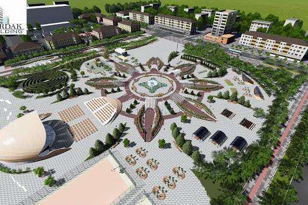
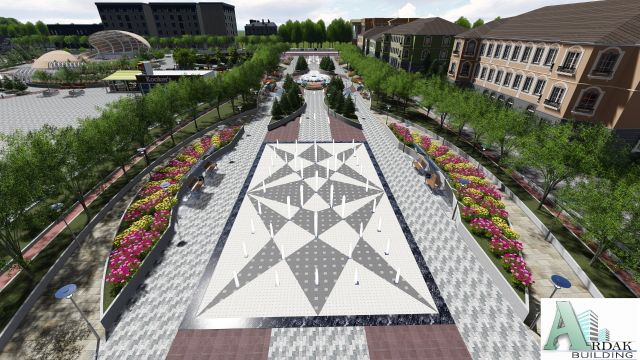
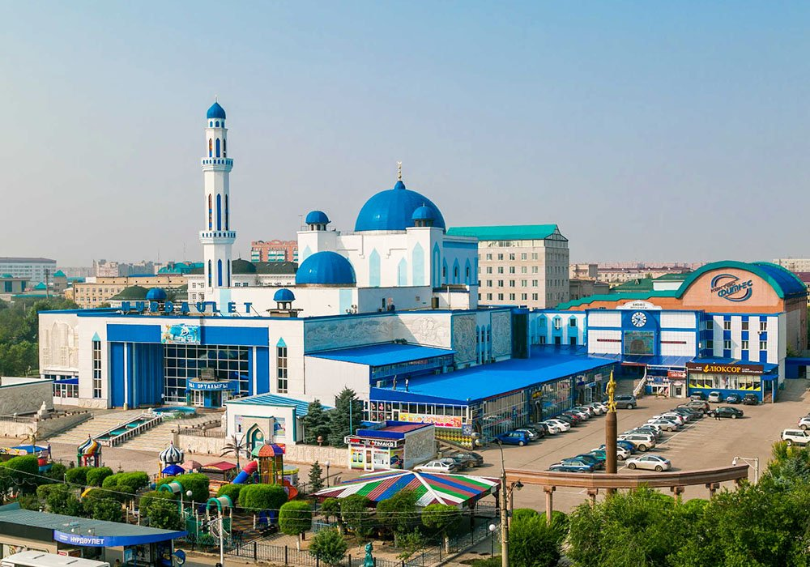
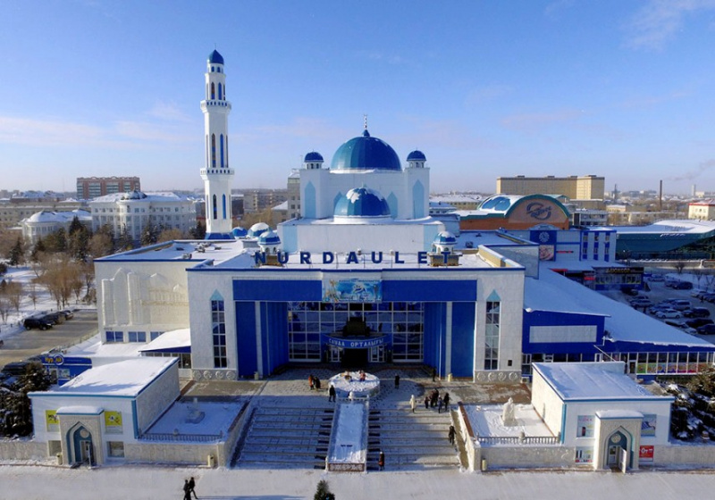

Актобе
Актобе — город в Западном Казахстане, административный центр Актюбинской области и одноимённой городской администрации. Актобе расположен на западе Казахстана, в северной части Актюбинской области. Площадь — 428,469 км². В 1997 году в ведение администрации города перешла территория упразднённого Актюбинского района. Площадь нового административно-территориального образования, включающего в себя сам город и пять соседних сельских округов, составила 2,3 тыс. км². В черте города протекают река Илек и несколько её притоков, вблизи находятся Актюбинское и Саздинское водохранилища. Вследствие расположенности во внутренней части Евразии и значительной отдалённости от океанов, климат города является резко континентальным. Актобе занимает четвёртое место среди городов Казахстана по числу жителей и является самым крупным городом Западного Казахстана. Население — 500 757 человек (начало 2020 года). Национальный состав весьма разнообразен. Наиболее многочисленны казахи (79 %) и русские (14,8 %). Преимущественное вероисповедание горожан — ислам и христианство. Формирующаяся Актобинская агломерация, которая в будущем должна «вместить» 1,3 млн человек, включает в себя несколько десятков населённых пунктов вблизи Актобе.
Мы хотим предоставить вам список мест, которые вы можете посетить в городе Актобе:
1. Кукольный театр Алакай. Один значимых культурных центров для детей, областной театр кукол «Алакай», начал свою творческую деятельность в ноябре 1985 года. Основу его репертуара составляют традиционный сказки казахского народа, в частности «Бей, дубинка» и «Уа, Алдар!». Здесь также ставится множество увлекательных спектаклей: бартенеевский «Здравствуйте!», кадыровский «Малшылар патшасы», гюнтеровский «Носорог и Жирафа», калиевский «Кояннын кулыгы», павловскисовский «Лягушонок и море», болдиновский «Не улетай», веселовский «Внимание, клоунада» и ряд других. Присутствует и мировая классика, например, знаменитый «Карлик Мук» Гауфа, андерсеновский «Гадкий утенок» или «Приключения доктора Дулитла», вышедшие из-под пера Готкина. На текущий момент в театре трудится профессиональный коллектив, состоящий из свыше полутора десятков талантливейших артистов, которые удостаивались множества профильных международных наград. Помимо прочего, учреждение признавалось самым профессиональным театром, а также театром двадцать первого века.
2. Мечеть Нур Гасыр Строительство мечети, название которой можно перевести как «Светлый век», велось в период с весны 2006 года по осень 2008 год. Она была открыта в торжественной обстановке при участии президентов Казахстана и России, а также ряда других почетных гостей в сентябре 2008 года. Характерно, что возведение мечети велось на пожертвования жителей города и бизнесменов. Всего свой вклад в это строительство внесли примерно 200 тысяч людей и свыше 1300 различных компаний. Проект мечети был подготовлен Айваром Сатаровым, хотя, помимо него, в конкурсе участвовали архитектурные компании из Турции и Узбекистана, Саудовской Аравии и ряда других стран. Здание Нур Гасыр имеет квадратную форму, а по его углам располагаются 63-метровые минареты. Композиция мечети – однокупольная, с куполом, имеющим высоту 60 и диаметр 20 метров, который помещен в самый центр строения. При возведении здания использовались монолитные железобетонные конструкции, сверху облицованные белым мрамором. Купол и минаретные верхушки покрыты металлом золотистого цвета. Внутренняя площадь мечети составляет 500 квадратных метров, общая вместимость залов для мужчин и женщин – 3,5 тысячи человек.
3. Музей Руханият Открытие Актюбинского областного музея «Руханият» состоялось в декабре 2011 года, для чего был выделен цокольный этаж мечети Нур Гасыр. Деятельность этого учреждения культуры направлена в первую очередь на научно-просветительскую и научно-исследовательскую работу, выполнение образовательной функции, пополнение коллекций предметами, имеющими религиозное, культовое и историческое значение. На создание музея было затрачено около года, причем в данном процессе принимали участие видные историки и религиоведы, культурологи и художники. В число экспонатов входит масштабированная копия главной мусульманской святыни – Каабы, модель Кожарской мечети, считающейся наиболее древней в Актюбинской области, медная посуда для омовения, отделанная драгоценными камнями, вытканный ручным способом в середине 60-х годов прошлого века коврик для намаза и т.д. Особую ценность представляют хранящиеся в музее экземпляры Корана, некоторые из которых датируются девятнадцатым веком, а также различные священные книги, появившиеся в семнадцатом-восемнадцатом веках.
4. Парк им. А.С. Пушкина Одно из излюбленнейших мест для отдыха местных жителей, где регулярно проводятся всевозможные праздничные мероприятия, находится на улице Карасай-батыра. Заложен этот парк культуры и отдыха был в период между 1887 и 1890 годами. Современное название в честь выдающегося русского поэта объект получил значительно позже, в 1937 году, когда отмечалось сто лет со дня рождения писателя. В советское время этот парк являлся одним из центров городской культуры и привлекал как местных жителей, так и тех, кто приезжал в Актобе в гости. Ранее здесь действовали два кинотеатра, причем один из них функционировал на бесплатной основе. Правда, в нем велась трансляция исключительно новостной хроники и партийной пропаганды. Во второй же, платный, люди приходили посмотреть художественные киноленты. В шестидесятых годах прошлого столетия в парке установили различные аттракционы, правда, в связи с произошедшим несчастным случаем было принято решение об их демонтаже. Вновь аттракционы и первые игровые автоматы появились здесь лишь под занавес 70-х годов прошлого столетия. В 1978 году вышеупомянутые кинотеатры уступили место эстраде, которая сохранилась и до сегодняшних дней.
 
5. Мечеть Нурдаулет История этой мечети началась в 1999 году, когда семья бизнесменов Байжаркановых приняла решение превратить правое крыло только что построенного торгового центра «Нурдаулет» в мечеть. В числе причин, побудивших это сделать, можно назвать недостаточную вместимость главной городской мечети и ее значительную удаленность от центральной части Актобе. На строительство двухэтажной четырехкупольной мечети площадью 1730 квадратных метров и высотой 37 метров ушло примерно полгода. Наряду с основным залом, здесь присутствуют две комнаты для молитв, женская комната, комната, где производится регистрация свадеб, а также некоторые другие служебные помещения. Высота минарета составляет 57 метров, диаметр – 36,5 метра. Строительство здания велось главным образом за счет средств самих предпринимателей, лишь под конец, когда денег уже не хватала, было решено прибегнуть к помощи других бизнесменов и простых горожан. Свое название мечеть, открытие которой состоялось в канун 130-летия Актобе, получила в честь Нурдуалета Байжаркинова, отца владельца одноименного ТЦ, который погиб на фронте во время ВОВ.
 